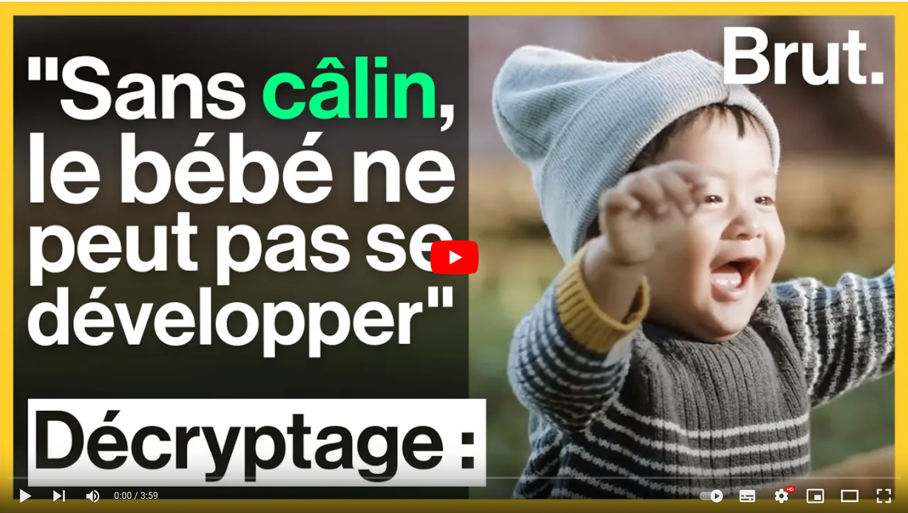
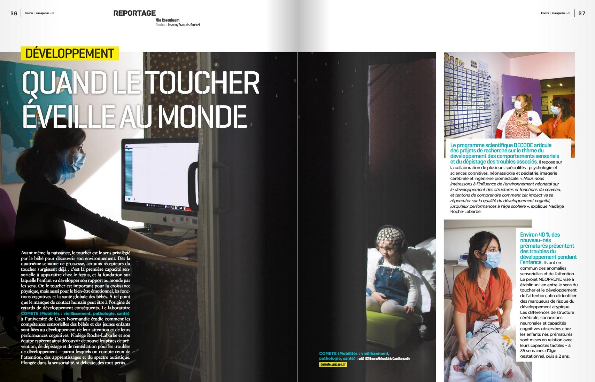
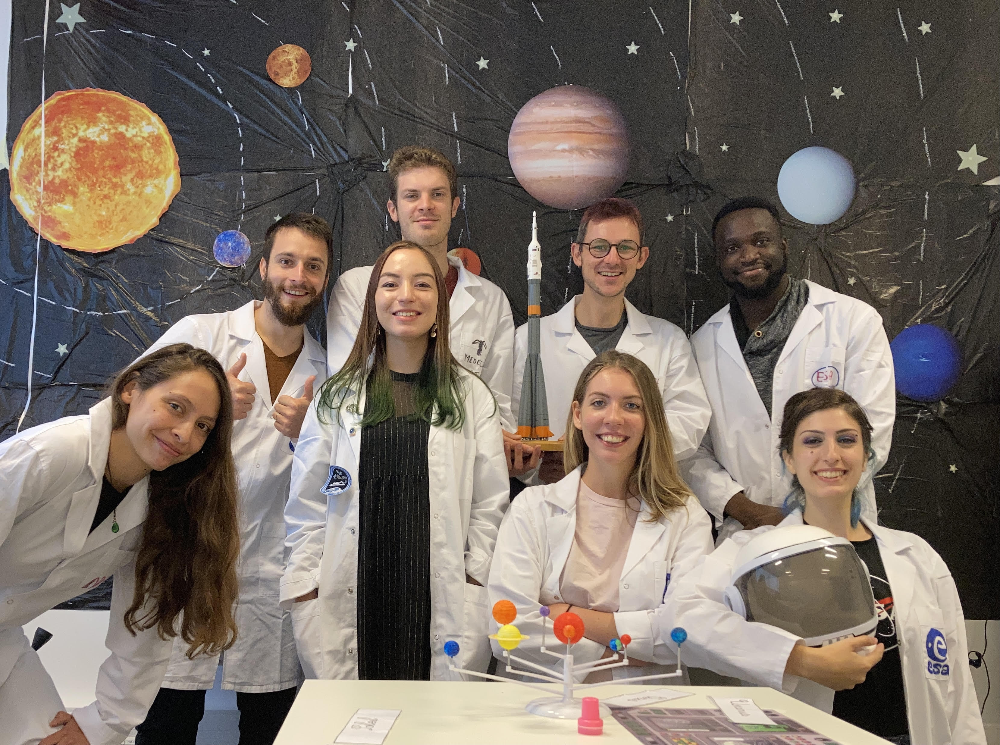
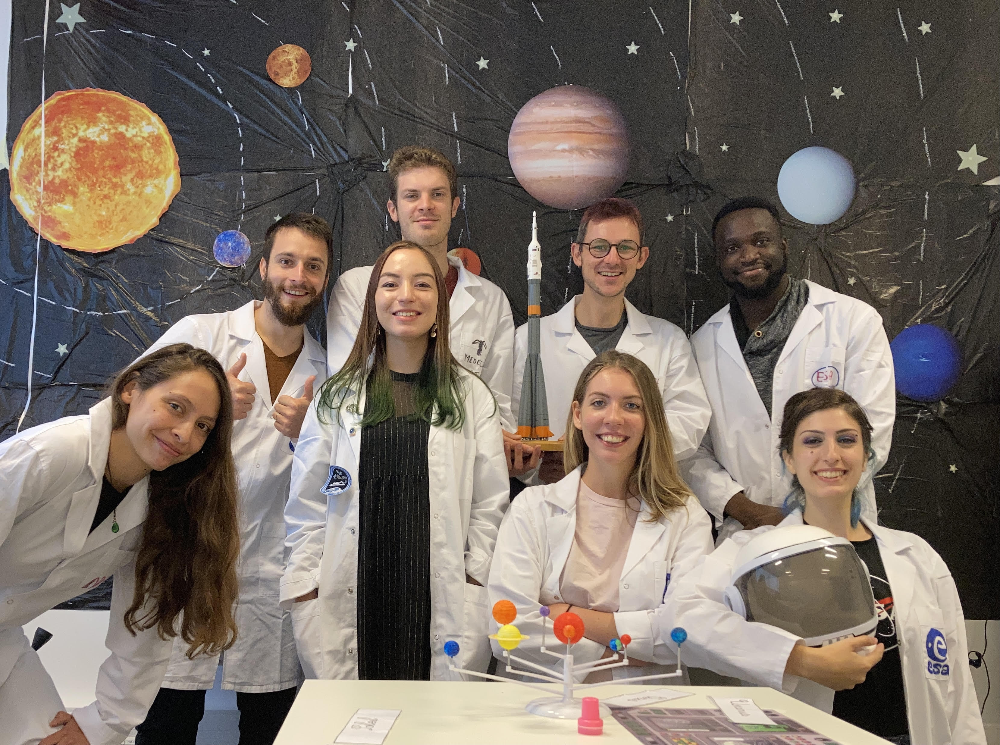

Docteur en psychologie

Programmation | Neurosciences dévelopmentales | Imagerie cérébrale
Réseaux
Me contacter
Email : anne-lise.marais [at] unicaen [dot] fr
Jardin écologique
Avec des doctorants du laboratoire COMETE, nous avons monté un dossier CVEC pour la création d'un jardin écologique pour la biodiversité. Partant du constat qu'il y avait très peu de zones vertes sur le campus, mais des ruches et des petits animaux, nous avons eu l'idée de créer un espace vert avec des tables mais également des endroits adaptés pour les petits animaux et des plantes adaptées à la biodiversité locale. Après avoir défendu le projets deux fois devant une comission, nous avons obtenu 34.000 euros pour la réalisation du jardin. Nous avons ensuite diffusé le projet à la radio locale et dans un article du journal de l'université.
Vulgarisation scientifique
2021 Décembre
Vidéo Brut Média
Avec l'équipe DECODE de mon doctorat, nous avons été interviewés pour Brut media.
Cette vidéo s'intitule "Pourquoi les câlins sont indispensables à la survie".
2021 Novembre
Magazine de l'INSERM
Avec l'équipe DECODE de mon doctorat, nous avons été interviewés pour Le magazine de l'INSERM numéro 51.
Cette article intitulé "Quand le toucher éveille au monde" (p36-39).
2021 Octobre
Fête de la science
Pour la Fête de la science 2021, j'ai réalisé différentes choses :
 

J'ai participé à un concours d'illustration scientifique et remporté la publication de mon dessin à l'Atrium of Rouen de Janvier 2022 à Octobre 2023from : "Apprendre par le toucher".
Nous avons également soumis une photographie pour l'exposition des images de sciences, "Scruter le développement des bébés prématurés" à l'université de Caen.
Avec des membres du laboratoires, nous avons organisé un Escape game sur le thème des astronautes, adapté de 6 à 16 ans. Nous avons accueillis une centaines d'enfants sur trois jours. Mon atelier était sur les modifications que subissent le cerveau des astronautes dans l'espace à l'aide d'un modèle de cerveau que j'ai rélaisé à l'aide d'une imprimante 3D.
2021 Février
L'atelier des chercheurs
J'ai participé à "L'atelier des chercheurs" organisé par Le dôme de Caen. L'atelier des chercheurs permet la rencontre entre des doctorants et des collégiens/lycéens pour parler de la recherche et du travail de doctorant. J'ai réalisé une intervention sur mesure nommé "A la découverte du cerveau".